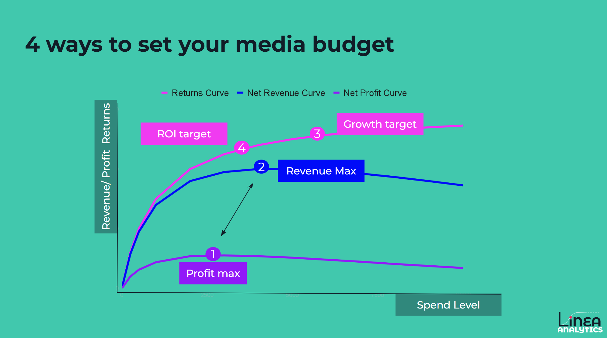
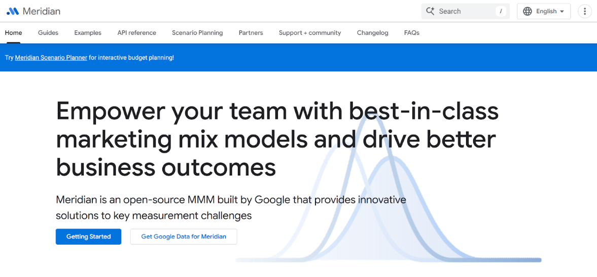
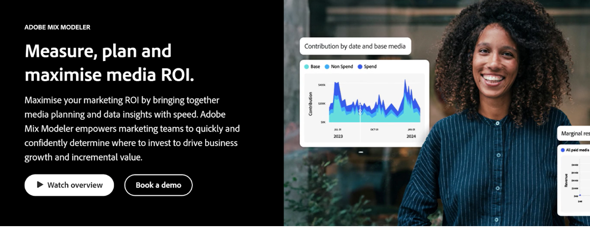
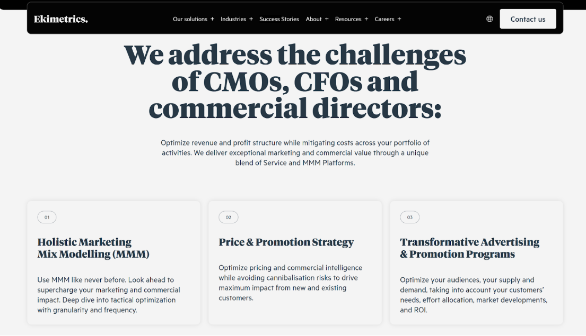
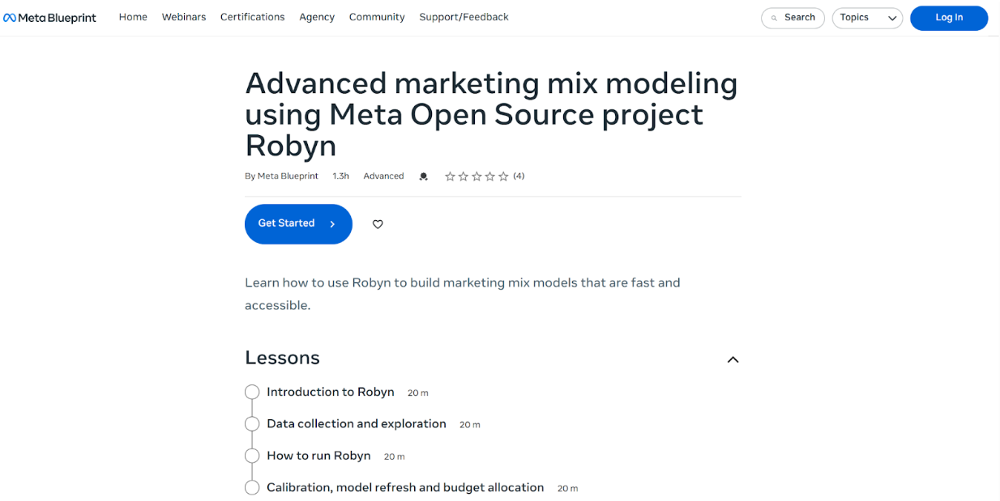

Top 6 Marketing Mix Modelling Tools for UK Brands in 2026
Why is MMM important?
In a world where digital tracking is increasingly complex and privacy regulations are tightening, Marketing Mix Modelling (MMM) has emerged as the gold standard for measuring the true, incremental impact of marketing.
For UK brands looking to move beyond the pitfalls of last-click attribution, brands want to measure:
What’s the incremental impact of marketing
Set budgets across media channels
Synergy effects between Media CPA & the wider environment (e.g. seasonality or promotions)
That's where MMM comes in to answer these questions.
What should MMM buyers focus on in 2026?
As we look toward 2026, below are 4 trends for MMM buyers to keep in mind:
Is it available at the right moments?
The importance of speed of updates has never been more relevant. Getting to an Always-on MMM has never been higher. Typically, MMM has been seen as slow and backwards-looking. But more than ever, brands want to use incremental focused MMM not just to allocate quarterly or annual budgets but to set optimal daily or weekly in-channel budgets.
Is it a Black Box, and can I own it?
Transparency sits at the heart of buyers decision making. That could be building in your own environment or getting full access to model parameters. This builds confidence in the accuracy of models and ensures the outputs are trusted.
Cost
The price of either internal data science teams or platform costs remains important, with prices varying subject to the number of models, markets & frequency of updates. Historically, MMM has been seen as expensive, but modern platforms can provide more cost-effective options. A successful implementation with action taken will drive significant commercial value.
Take action from MMM.
Taking action from MMM is often not a technical challenge but an ability to take stakeholders on a journey from current measurement to incremental & cross channel measurement. Access to the right information, knowledge & tools to drive implementation ensures that brands can take action from MMM.
The Top 6
Here is our definitive list of the top 6 MMM tools for UK brands
Linea Analytics
Meridian from Google
Adobe Mix Modeler
Ekimetrics
Robyn from Meta
Media Agency (e.g. Mediacom)
1. Linea Analytics
The UK Leader for Actionable Growth
Linea have redefined the category by focusing on speed & transparency so you take action from MMM. While many traditional providers still operate on manual processes that create a significant time cost, Linea uses advanced automation to deliver Always-on MMM.
Speed & Automation: The Linea Platform automates data connectivity, model updates, and results availability. This moves measurement from a retrospective "post-mortem" to a forward-looking strategic tool. Allowing for in-campaign scaling or changes.
Transparency: Unlike "black box" solutions, Linea provides full access to data, assumptions and modelling uncertainty. The aim of this is to build trust between data science and marketing teams.
Scenario Planning: The Linea Scenario Tool is focused on answering your business questions. Whether that's understanding if you can scale budgets or allocate your budget to hit growth targets. Users can run their own scenarios.
Tools & Team to Take Action: Linea’s solutions combine an implementation-focused platform with a team that ensures you maximise your Return on Measurement Investment.

2. Meridian from Google
The New Open-Source Challenger
Meridian is Google’s open-source MMM framework designed to help brands build their own models.
It provides a robust, Bayesian-based framework that is free to access and integrates well with Google’s data ecosystem.
Whilst complex to set up and run in an automated way, the Meridian library and volume of external information are growing, including our very own detailed overview of how to get started with Meridian.
Heavy Google spenders will benefit from an incremental, focused measurement approach from Meridian. Provider greater accuracy on your search & YouTube ad spend
The open source infrastructure means that brands can “own the measurement”. This does mean that teams need the technical capability to set up the data, build the analysis and take action from the work.

3. Adobe Mix Modeler
The Integrated Solution
The Adobe solution is integrated with the wider Adobe Analytics stack. This allows for incremental effectiveness of your paid, owned and earned marketing channels.
The platform is a self-service approach that can be built in-house, with partners or through the Adobe consultancy service.
Its advantage is the native integration into owned Adobe data systems. In addition, the platform also allows wider integrations into external data systems, e.g. ad platforms.
The platform offers a scenario planning function. This allows Brands to track performance during live campaigns and capitalise on opportunities for in-flight optimisation.

4. Ekimetrics
The Enterprise Strategic Partner
Moving away from the tool providers. Ekimetrics is a global consultancy known for handling large-scale, enterprise-level MMM projects.
They offer deep strategic consulting alongside their data models, making them a strong choice for large multinational brands with complex global structures.
Their expertise has been recognised as visionary in the Gartner Magic Quadrants for MMM, with a particular focus on their outcome-led approach.
With that focus on execution, their approach can be less "always-on" and more project-based, which may lead to a slower time-to-action compared to automated platforms.

5. Robyn from Meta
The Established Open-Source Framework
Meta’s Robyn remains a popular choice for brands starting their MMM journey.
It uses automated hyperparameter optimisation (Nevergrad) to find the best model fit and includes built-in features for measuring adstock (memory effects).
Whilst a strong infrastructure (such as the training), the open source MMM community appears to be moving in the direction of Meridian. This means that online support, community and documentation are falling behind the Google competitor. You can find more details about Robyn vs. Meridian here.

6. Media Agency Partners (e.g., Mediacom)
The Integrated Approach
Many UK brands still rely on their media agencies for measurement.
The clear benefit of this approach is that measurement is closely tied to the media planning and buying team. Where this works, it can allow for immediate implementation of results within the agency's workflows.
Whilst many “in-house” have a strong skill set, teams do suffer from two areas:
One is the perceived "conflict of interest" when the teams financially dependent on media buying are the ones responsible for spending the budget.
Agency MMM approaches don’t have the same level of singular focus in tool development. Leading to slower delivery times and functionality in platform tools
Buyers should balance the strengths and weaknesses of Media Agencies vs. Open Source vs. Specialised External partners.
Why Linea Analytics is the Strategic Choice for 2026
While open-source tools like Robyn and Meridian have lowered the barrier to entry, accurate measurement needs the right combination of Platform + People so you can take action.
Linea bridges the gap between complex data science and marketing strategy. By using the Always-on MMM platform, UK brands can stop guessing and start growing with confidence, backed by measurement focused on helping you drive growth. See how Linea compares here.
Want to find out more about Linea?
Book a demo to see how you can answer your key business questions.